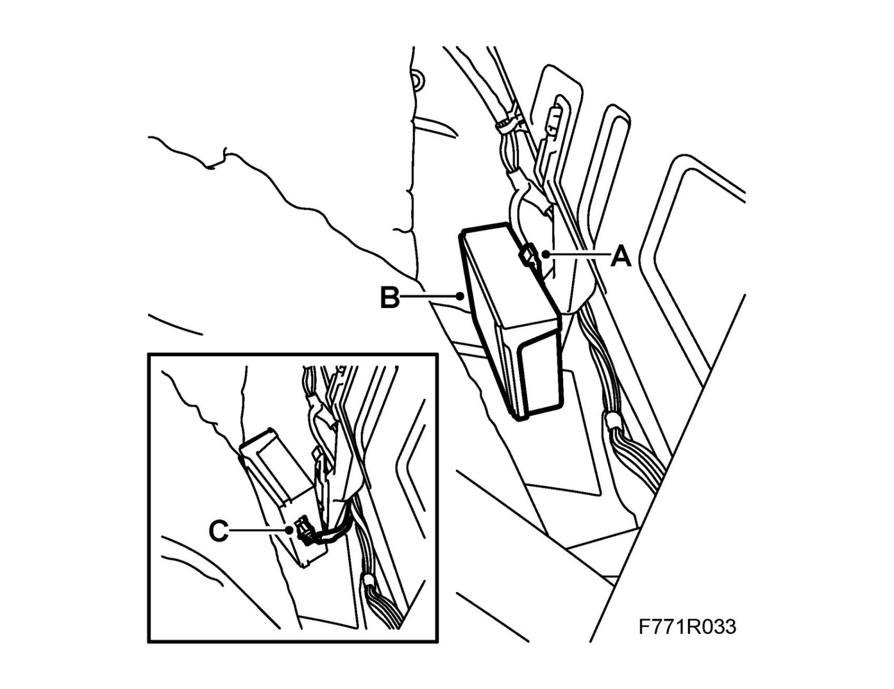
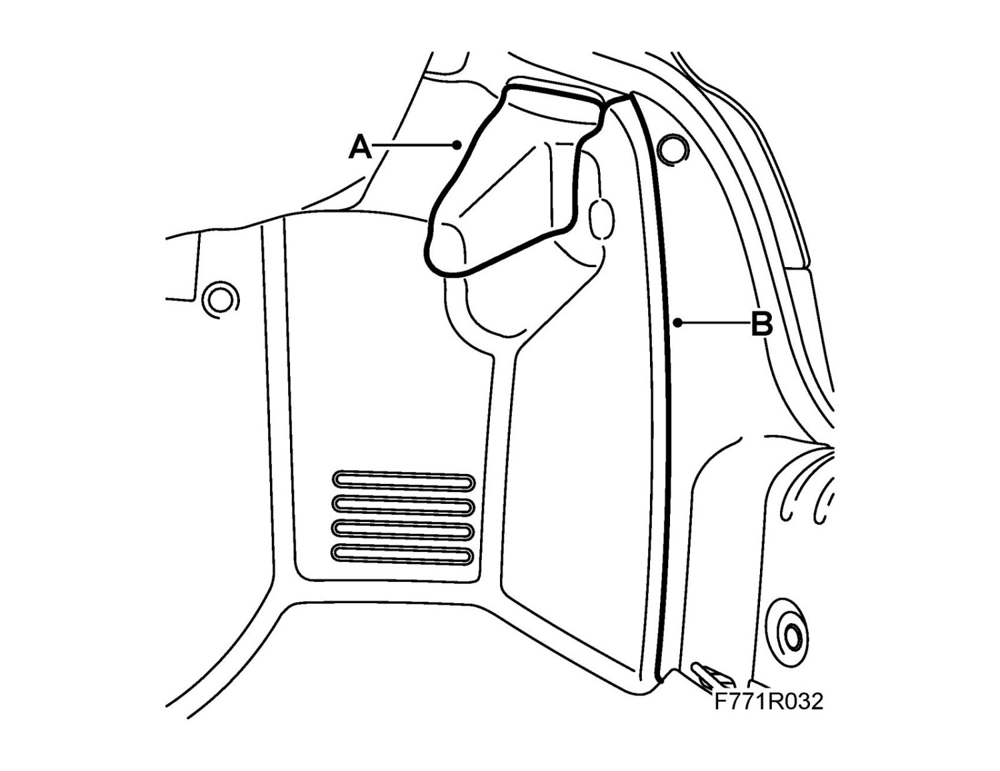

Control Module, Tire Pressure (753), CV
Control module, tire pressure (753), CVTo remove
1. Carry out Procedure before control module removal.
2. Open boot lid.
3. Remove the hatch (A) in the trim. Carefully lower the trim (B).

4. Remove the control module:

^ Press in the lock lug (A) and detach the control module (B) by pulling it upward.
^ Unplug the connector (C) by pulling it straight out.
To fit
1. Fit the control module:

^ Plug in the connector (C).
^ Fit the control module (B) by guiding it down until its lock lugs (A) engage.
2. Carefully reposition the trim (B) and close the hatch (A) in the trim.

3. Close the boot lid.
4. Carry out Procedure after control module replacement.